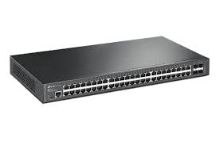

Pengertian Switch
Switch adalah perangkat jaringan yang digunakan untuk menghubungkan perangkat-perangkat dalam suatu jaringan lokal (LAN). Fungsi switch adalah meneruskan paket data antara perangkat-perangkat yang terhubung ke switch tersebut. Switch bekerja pada lapisan data link (layer 2) dalam OSI Layer dan mampu melakukan pengiriman data berdasarkan alamat MAC (Media Access Control).
Fungsi Switch
Switch menghubungkan perangkat dalam jaringan lokal (LAN) dan meneruskan paket data dengan efisien. Beberapa fungsi utama switch adalah:
- Meneruskan paket data berdasarkan alamat MAC tujuan.
- Segmentasi jaringan dengan VLAN.
- Meningkatkan kinerja jaringan dengan mengurangi tabrakan data.
- Memfilter dan mengontrol lalu lintas broadcast.
- Penyampaian paket data dengan cepat.

Contoh gambar perangkat Switch.